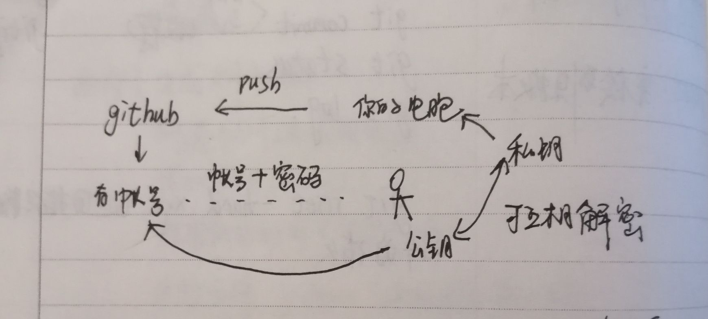
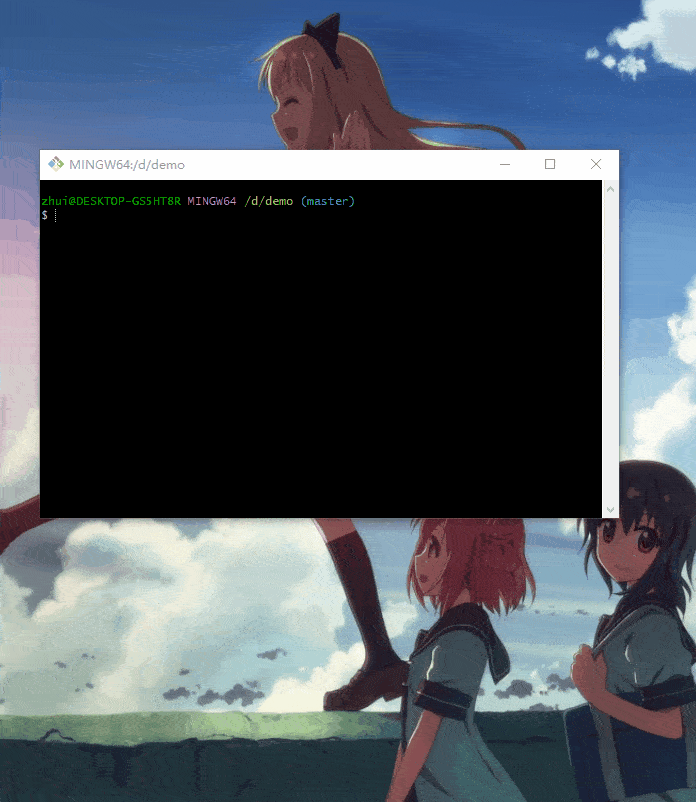
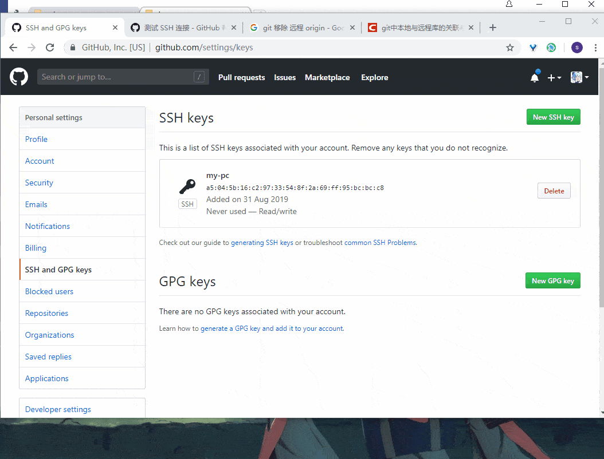

Git的基本配置和使用(二)
上一篇讲述着重记录了 Git 的基本配置和 Git 本地仓库常见指令的使用。
这篇将记录 Git 的远程仓库与本地仓库连接的指令。
Github
全球最大的同性交友平台，也是最大的使用 Git 进行代码管理的开源平台。
因此注册一个 Github 账号来管理我们的代码是很有必要的。
我们本地仓库，又是如何与远程仓库产生关联呢？ 通过 ssh 可以很方便的进行连接。

生成 ssh
在 git-bash 中运行下面指令，然后一路回车，就能够产生一个 ssh 密钥对，私钥的内容自己保管好，公钥的内容则可以随意使用。
ssh-keygen -t rsa -b 4096 -C myEmail
与 Github 关联
上传公钥的内容，手动上传完公钥之后，第一次需要在 git-bash 中执行一次连接测试，验证 ssh 是否能够正常使用，同时将 github 它们的 公钥写入 known_hosts 文件中。
ssh -T git@github.com
新建远程仓库并与本地仓库连接。
之前，在本地创建创建一个叫做 demo 的本地仓库，现在要在 Github 上创建一个远程仓库（仓库名可以不一致，但建议一致），然后根据提示，就能够建立本地仓库和远程仓库的连接。

其余的一些指令
git clone： 从某个远程仓库拉去代码，可以是自己的，也可以是别人的（此时只能使用 http 的方法，而不是ssh的方法）git push： 本地仓库已经和某个远程仓库连接， 使用此指令可以将本地仓库的提交更新到远程仓库。git pull：本地仓库已经和某个远程仓库连接，该指令一般多人协作时用到，用于从远程仓库拉取最新代码（可能会产生冲突，需要解决）
如何将本地仓库的某分支，上传到远程仓库的某个分支
我们知道，本地仓库的默认分支叫做 master ， 远程分支也有一个默认分支叫做 master，但为了和本地仓库进行区分，所以关联的时候，一般会设置成 origin。
现在本地仓库有一个新分支叫做 test， 要把它上传到 远程仓库的 test 分支（现在还没有），应该怎么办呢？
执行下面一行语句即可，意思就是将本地的 test 分支，上传到远程的 test 分支（如果不存在，则会创建）。
git push origin test:test如何克隆远程仓库的某个分支
其实使用 git clone 命令，就已经克隆完完整整的所有代码了，包括某个分支的代码，因此方法很简单，就是克隆整个代码，然后使用 git ckeckout 切换到对应的分支即可。
至于其他方法，其实不推荐的，因为确实比较复杂。
Google广告
假装这里有广告